华润置地进入 DT时代 ，
数据成为新生产要素，技术成为创新驱动力
Data becomes the new factors of production.
Technology is the driving force innovation.
华润置地十三五规划目标：建设 “数据化置地”
数据化交互
数据化运营
数据化洞洞察决策
一切业务 数据化
一切数据 业务化
Digitalize business.
Support business with data.
用科学精神，建设 “数据化置地”
推动信息化组织重塑与构建
以客户为导向进行流程再造 ，以科学精神进行数据管理
同时基于数字化转型的时代背景，以及建设 “数据化置地”的⼗十三五信息化建设核心使命对数据平台
提出了新的挑战与机遇，技术团队确定的 “数据” + “技术” + “服务” 三维度的运营策略略旨在
将数据意识和数据思维渗透到信息化建设的各个领域与环节；数据服务平台(DSP)即是“服
务”维度的核心解决方案，借助置地 技术中台PAAS平台能力构建 数据服务化体系的数据中
台，同时填补业界在数据共享与资产监管等领域的产品空白。
平台基于微服务架构集成各种数据能力和大数据组件进行开发，通过规范数据管理、发布、审计等流程。打造企业统一的数据发布平台，并对外提供开放接口，争取做到一份数据一个服务，万人使用，平台主要包括数据源管理、服务模型管理、数据资产管理、数据服务管理、安全管理和平台管理等，为企业用户提供数据访问、发布等功能。该平台还提供数据处理和分析功能，可直接和BI工具进行无缝对接，基于平台和业务需求，用户可以实现自己想要的功能或场景。
本文档适用于数据应用用户、平台管理用户、数据工程师、数据架构师操作人员。
tips：
- 数据源名称：可由英文字母、数字、汉字、下划线组成，长度不超过 60 个字符。
- 最大连接数：根据实际情况合理配置，此值会均匀分配到各个服务实例上。
关系型数据库MySQL：
- 选择模型类型:资产模型;
- 选择所属资产领域、资产主题;
- 模型名称：例如：模型销售明细数据MDM
- 数据源：选择已存在的数据源。
- 是否发布：是
- 发布类型：post
- 表达式类型：数据源表
- 数据源表：选择需要发布表名称
- 属性列表：剔除不需要发布的属性字段(默认选择所有表属性，最终用户能访问的属性由数据服务管理功能授权确定，参考数据服务管理功能授权)。
- 参数列表：选择需要过滤的条件属性，取个好的参数名(建议不要和属性名一致，因为同一属性名多次条件过滤会冲突)。 选择类型、操作符等，确认是否必填。
- 验证测试通过，点击“保存”按钮。
redis：
- 选择模型类型:资产模型;
- 选择所属资产领域、资产主题;
- 模型名称：例如：模型销售明细数据MDM
- 数据源：选择已存在的数据源。
- 是否发布：是
- 发布类型：post
- 表达式类型：空
- 数据源表：空
- 属性列表：新增两属性key,value，类型都是string
- 参数列表：新增两参数名key,value，选择属性名：key、value, 选择类型string、选择操作符“等于”、必填。
- 验证测试通过，点击“保存”按钮。
hbase：
- 选择模型类型:资产模型;
- 选择所属资产领域、资产主题;
- 模型名称：例如：模型销售明细数据MDM
- 数据源：选择已存在的数据源。
- 是否发布：是
- 发布类型：post
- 表达式类型：数据源表
- 数据源表：选择需要发布表名称(列族+列),
- 属性列表：新增属性rowkey，类型都是string
- 参数列表：新增参数名rowkey，选择属性名：rowkey, 选择类型string、选择操作符“等于”、必填。
- 验证测试通过，点击“保存”按钮。
kafka：
- 选择模型类型:能力模型;
- 选择大类：组件;
- 选择子类：消息队列
- 模型名称：实时大屏消费队列
- 数据源：选择已存在的数据源。
- 是否发布：是
- 发布类型：post
- topicName：（已存在的topic）
- 参数列表：新增参数名message，参数位置：无, 选择类型string、选择操作符“等于”、必填。
- 验证测试通过，点击“保存”按钮。
http：
- 注：post请求的header信息需提前在数据源中配置，具体配置请参考驱动配置帮助部分。
- 选择模型类型:能力模型;
- 选择大类：应用接口;
- 选择子类：数据采集
- 模型名称：
- 数据源：选择已存在的数据源。
- 是否发布：是
- 发布类型：post
- url: URL地址
- 参数列表：新增参数名body，参数位置：body, 选择类型string、选择操作符“等于”、必填。
- 验证测试通过，点击“保存”按钮。
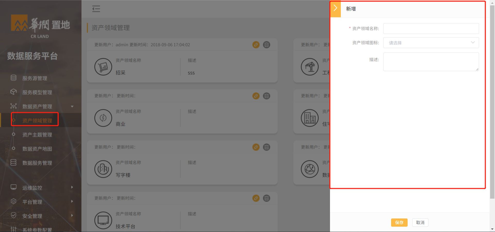
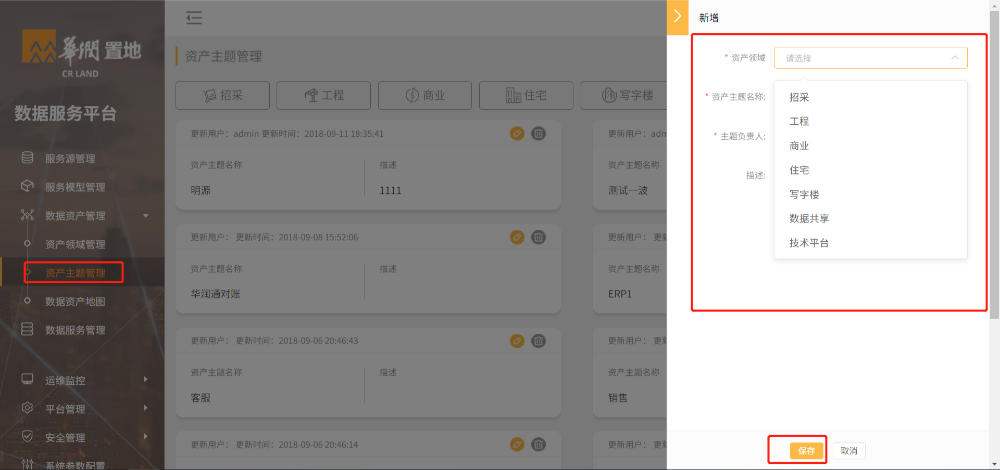
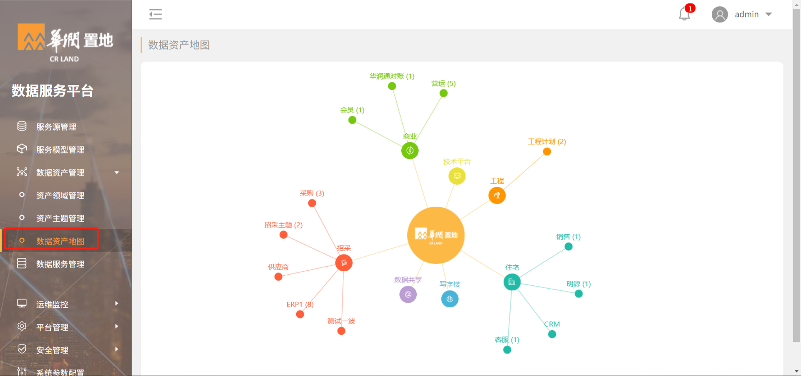
参数样例：
| 请求参数 | 参数类型 | 参数说明 |
|---|---|---|
| token | String | 服务授权时生成 |
| appid | String | 服务用户Id |
| content-type | String | 使用post请求，请选择 application/json |
| dataServiceId | String | 数据服务Id |
| data | List | 参数数据体 |
| fields | List | 属性列表 |
| fieldName | String | 属性名 |
| params | List | 参数列表 |
| name | String | 参数名 |
| value | String | 参数值 |
请求示例：
body:
{
"dataServiceId": "API_000053",
"data": {
"fields": [{
"fieldName": "project_number"
},
{
"fieldName": "tenant_number"
}
],
"params": [{
"name": " project_number",
"value": "1111"
}]
}
}
返回参数：
| 请求参数 | 参数类型 | 参数说明 |
|---|---|---|
| code | int | 200:成功，400失败 |
| message | String | 返回状态，成功或者失败 |
| data | List | 结果体 |
| result | Array | 结果数组列表 |
返回示例：
{
"code": 200,
"message": "success",
"data": {
"result": "[{rowkey=11, cf1:photo_id=, cf1:photoStream=}]"
}
}
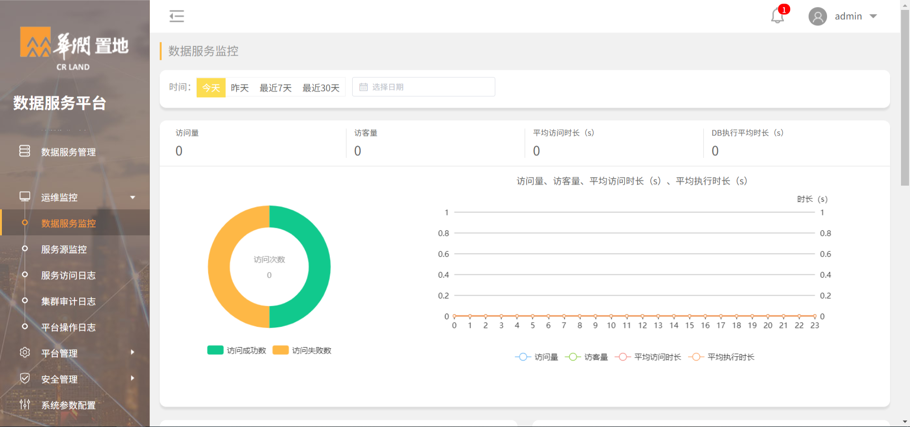
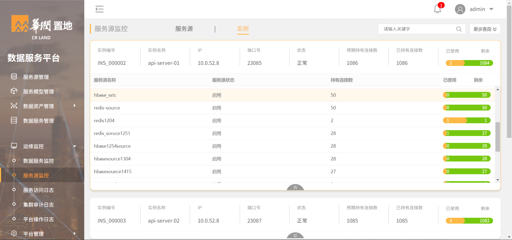 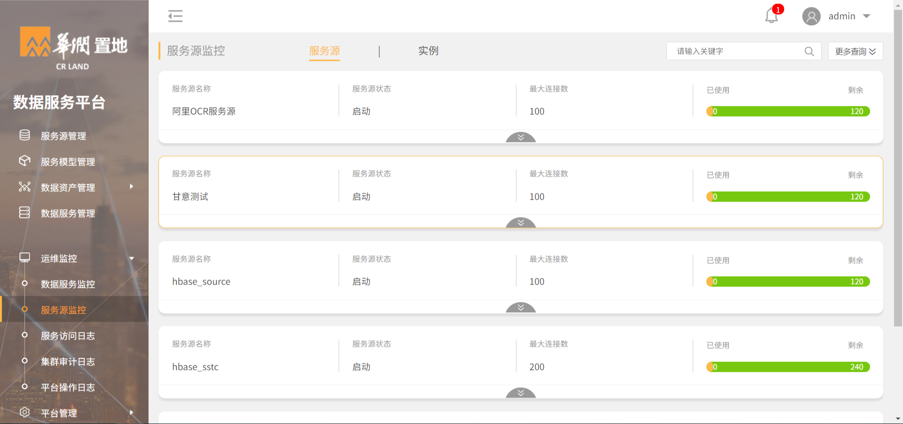
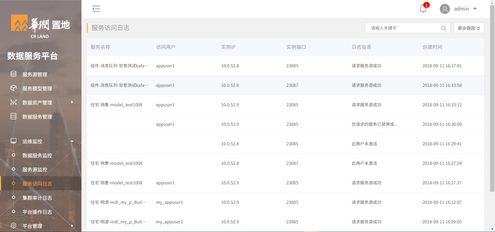
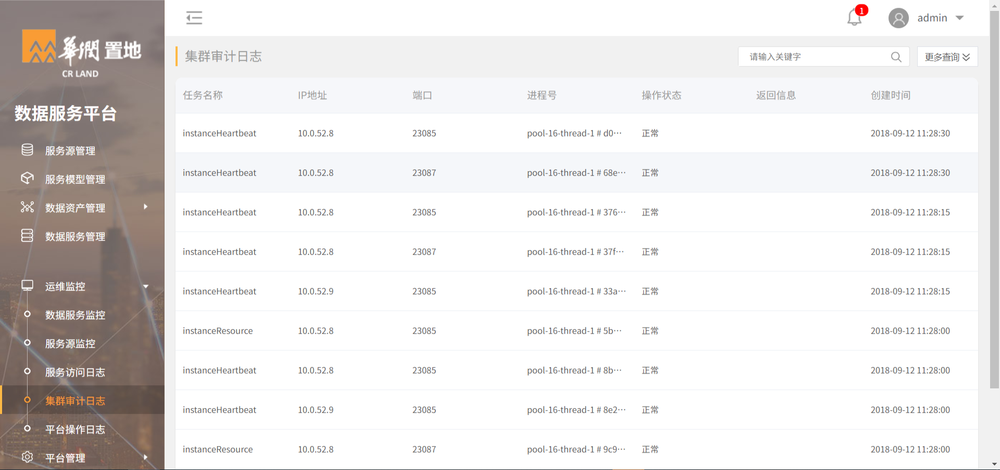
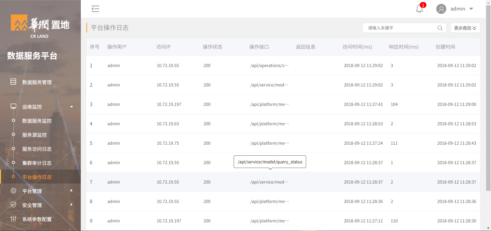
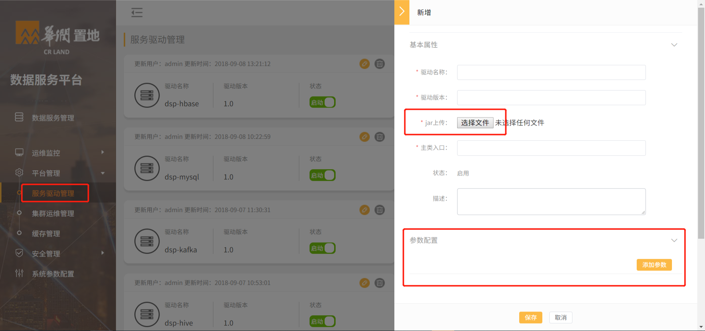
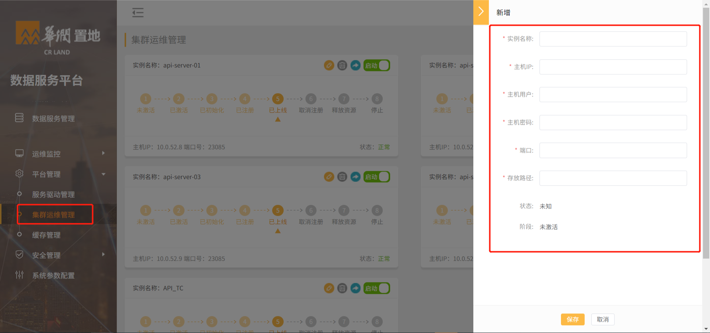
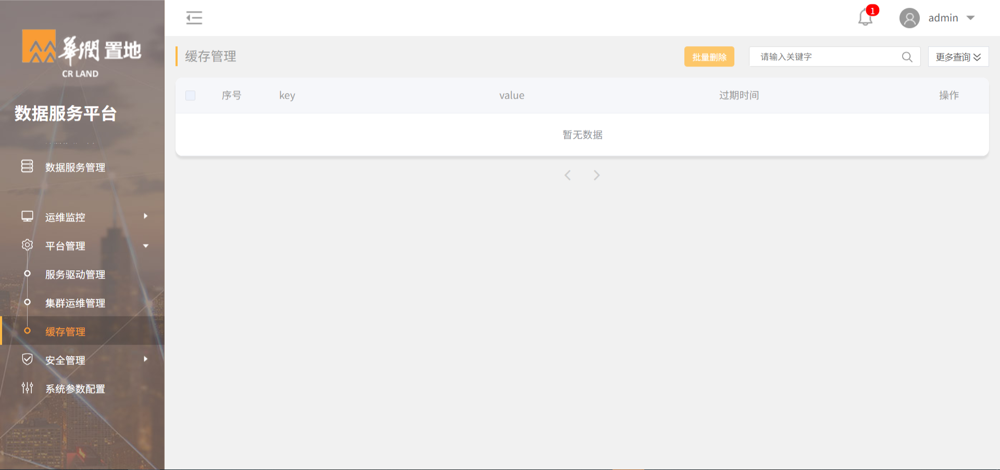
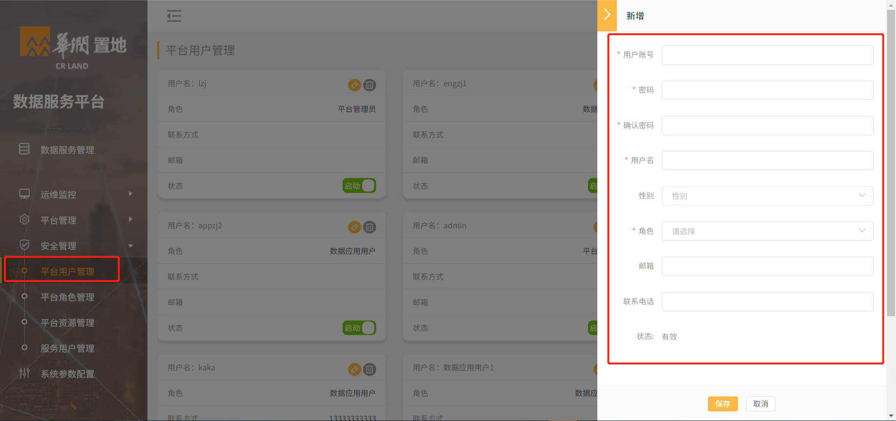
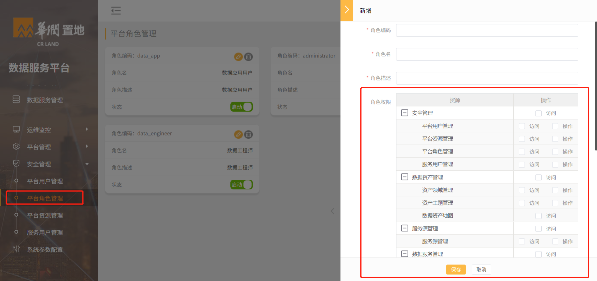
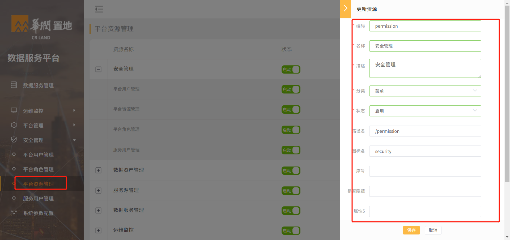 1. 登陆平台之后，单击对应菜单操作进入工作区。 1. 单击左边菜单栏中的平台资源管理，导航至平台资源管理页面。 1. 单击新增，滑出平台资源新增窗口。 1. 在新增平台资源窗口中，填写相关名称信息 1. 单击“保存”。
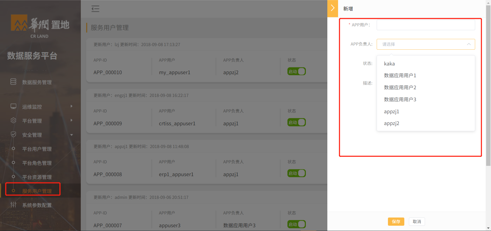
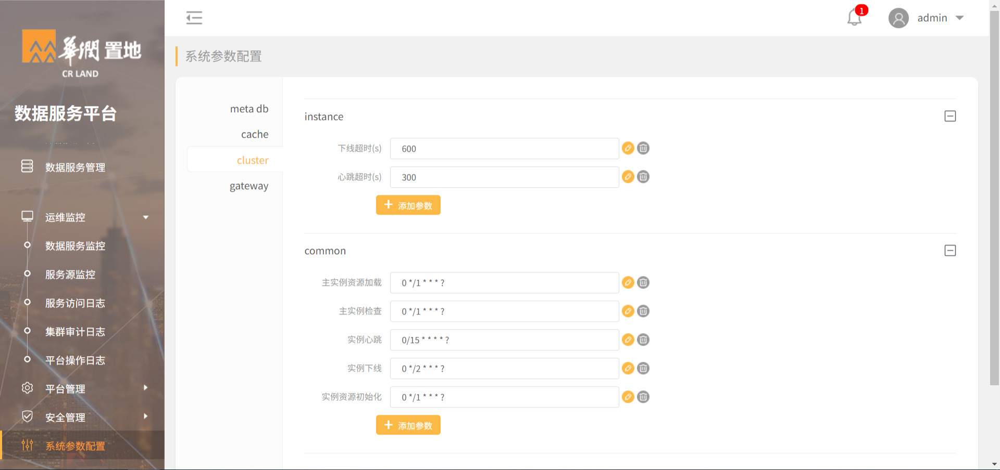
| 参数名 | 显示名字 | 参数值(样例) | 描述 |
|---|---|---|---|
| 主类入口 | MysqlSessionFactory | ||
| mysql.datasource.driver-class-name | 驱动类 | com.mysql.jdbc.Driver | |
| mysql.datasource.url | URL | jdbc:mysql://10.0.52.9:3306/dsp? charset=UTF8&useSSL=false&useUnicode=true&characterEncoding=utf8 | |
| mysql.datasource.username | 用户名 | root | |
| mysql.datasource.password | 密码 | admin | |
| mysql.datasource.query-timeout | 查询超时(s) | 15 | |
| mysql.datasource.maxwait | 连接等待(s) | 2 | |
| mysql.datasource.max-limit | 最大限制 | 1000 |
| 参数名 | 显示名字 | 参数值(样例) | 描述 |
|---|---|---|---|
| 主类入口 | OracleSessionFactory | ||
| oracle.datasource.driver-class-name | 驱动类 | oracle.jdbc.driver.OracleDriver | |
| oracle.datasource.url | URL | jdbc:oracle:thin:@10.72.1.76:1521/MIXCRMDB | |
| oracle.datasource.username | 用户名 | root | |
| oracle.datasource.password | 密码 | admin | |
| oracle.datasource.query-timeout | 查询超时(s) | 15 | |
| oracle.datasource.maxwait | 连接等待(s) | 2 | |
| oracle.datasource.max-limit | 最大限制 | 1000 |
| 参数名 | 显示名字 | 参数值(样例) | 描述 |
|---|---|---|---|
| 主类入口 | SqlServerSessionFactory | ||
| sqlserver.datasource.driver-class-name | 驱动类 | com.microsoft.sqlserver.jdbc.SQLServerDriver | |
| sqlserver.datasource.url | URL | jdbc:sqlserver://10.72.1.201:1433;DatabaseName=dotnet_erp25_20170714 | |
| sqlserver.datasource.username | 用户名 | mysoft | |
| sqlserver.datasource.password | 密码 | 95938 | |
| sqlserver.datasource.query-timeout | 查询超时(s) | 15 | |
| sqlserver.datasource.maxwait | 连接等待(s) | 2 | |
| sqlserver.datasource.max-limit | 最大限制 | 1000 |
| 参数名 | 显示名字 | 参数值(样例) | 描述 |
|---|---|---|---|
| 主类入口 | HiveSessionFactory | ||
| hive.datasource.driver-class-name | 驱动类 | org.apache.hive.jdbc.HiveDriver | |
| hive.datasource.url | URL | jdbc:hive2://zdhdpvdca04.crhd0a.crc.hk:10000/test | |
| hive.datasource.username | 用户名 | hive | |
| hive.datasource.password | 密码 | hive | |
| hive.datasource.query-timeout | 查询超时(s) | 15 | |
| hive.datasource.maxwait | 连接等待(s) | 2 |
| 参数名 | 显示名字 | 参数值(样例) | 描述 |
|---|---|---|---|
| 主类入口 | HbaseSessionFactory | ||
| hbase.datasource.rootdir | 根目录 | hdfs://zdhdpvdca02.crhd0a.crc.hk:8020/apps/hbase/data | |
| hbase.datasource.zookeeper.quorum | zk集群 | zdhdpvdca03.crhd0a.crc.hk,zdhdpvdca02.crhd0a.crc.hk,zdhdpvdca01.crhd0a.crc.hk | |
| hbase.datasource.zookeeper.znode.parent | znode.parent | /hbase-unsecure | |
| hbase.datasource.max-total | 最大连接数 | 100 | |
| hbase.datasource.max-idle | 最大空闲数 | 8 | |
| hbase.datasource.min-idle | 最小空闲数 | 2 | |
| hbase.datasource.maxwait | 连接等待(s) | 2 |
| 参数名 | 显示名字 | 参数值(样例) | 描述 |
|---|---|---|---|
| 主类入口 | PostgreSQLSessionFactory | ||
| postgresql.datasource.driver-class-name | 驱动类 | org.postgresql.Driver | |
| postgresql.datasource.url | URL | jdbc:postgresql://10.0.96.56:5432/CRLAND_EDB | |
| postgresql.datasource.username | 用户名 | root | |
| postgresql.datasource.password | 密码 | admin | |
| postgresql.datasource.query-timeout | 查询超时(s) | 15 | |
| postgresql.datasource.maxwait | 连接等待(s) | 2 | |
| postgresql.datasource.max-limit | 最大限制 | 1000 |
| 参数名 | 显示名字 | 参数值(样例) | 描述 |
|---|---|---|---|
| 主类入口 | RedisSessionFactory | ||
| redis.datasource.host | 主机 | 10.0.52.8 | |
| redis.datasource.port | 端口 | 6379 | |
| redis.datasource.password | 密码 | ||
| redis.datasource.database | 数据库ID | 15 | |
| redis.datasource.max-total | 最大连接数 | 6 | |
| redis.datasource.maxwait | 连接等待(s) | 18 | |
| redis.datasource.min-idle | 最小空闲数 | 4 | |
| redis.datasource.timeout | 超时时间 | 1000 | |
| redis.datasource.max-idle | 最大空闲数 | 8 |
| 参数名 | 显示名字 | 参数值(样例) | 描述 |
|---|---|---|---|
| 主类入口 | KafkaSessionFactory | ||
| kafka.datasource.producer.servers | 集群地址 | 10.0.52.215:6667 | |
| kafka.datasource.producer.retries | 生产者重试次数 | 5 | |
| kafka.datasource.batch.size | 每次生产大小 | 4096 | |
| kafka.datasource.producer.linger | 生产者延迟 | 5 | |
| kafka.datasource.producer.buffer.memory | 生产者缓存大小 | 40960 | |
| kafka.datasource.consumer.bootstrap.servers | 消费者客户端 | 10.0.52.215:6667 | |
| kafka.datasource.consumer.enable.auto.commit | 消费者是否自动提交 | TRUE | |
| kafka.datasource.consumer.session.timeout.ms | 消费者超时时间 | 6000 | |
| kafka.datasource.consumer.auto.commit.interval.ms | 消费者提交间隔 | 100 | |
| kafka.datasource.consumer.auto.offset.reset | offset | latest/earliest | 二选其一 |
| kafka.datasource.max-total | 最大连接数 | 10 | |
| kafka.datasource.max-idle | 最大空闲数 | 8 | |
| kafka.datasource.min-idle | 最小空闲数 | 1 | |
| kafka.datasource.maxwait | 连接超时(s) | 2 |
| 参数名 | 显示名字 | 参数值(样例) | 描述 |
|---|---|---|---|
| 主类入口 | HttpSessionFactory | ||
| http.datasource.max-total | 最大连接数 | 24 | |
| http.datasource.max-idle | 最大空闲数 | 8 | |
| http.datasource.min-idle | 最小空闲数 | 4 | |
| http.datasource.Content-Type | 请求类型 | application/json | |
| http.datasource.maxwait | 连接超时(s) | 2 | |
| http.datasource.proxy.hostname | 代理地址 | 10.0.248.64 | 可选，此参数在数据源时配置 |
| http.datasource.proxy.port | 端口 | 3128 | 可选 此参数在数据源时配置 |
| http.datasource.head.[name] | 请求头部名字 | 例如：http.datasource.head.token:****** | 可选， name就是实际头部的参数，此参数在数据源时配置 |
<dependency> <groupId>com.stackstech.dcp</groupId> <artifactId>dsp-driver-api</artifactId> <version>1.0</version> </dependency>
public class HttpSession extends AbstractDspPoolSession implements ResourceSession {
private HttpHost proxy = null;
private CloseableHttpClient httpclient = HttpClients.createDefault();
private Map<String,Object> paramHead = new HashMap<>() ;
private HttpSession(ClassLoader classLoader) {
this.classLoader = classLoader;
}
public static HttpSession getInstance(ClassLoader classLoader) {
return new HttpSession(classLoader);
}
//初始化驱动需要依赖的配置参数。
public HttpSession initialize(Map<String, Object> config) {
pool = new GenericObjectPool(new DriverPoolFactory());
pool.setMaxTotal( Integer.valueOf((String) config.get("http.datasource.max-total")));
pool.setMaxIdle( Integer.valueOf((String) config.get("http.datasource.max-idle")));
pool.setMinIdle( Integer.valueOf((String) config.get("http.datasource.min-idle")));
........
return this;
}
@Override
public List<Map<String, Object>> get(String statement) {
return null;
}
@Override
public DriverMetaData get(DriverModel driverModel) {
DriverModel driverModel = driverModel;
try{
borrow = pool.borrowObject();
}catch (Exception e) {
e.printStackTrace();
}finally {
pool.returnObject(borrow);
}
return new DriverMetaData(MetaDataTypeEnum.NOSQL,execute);
}
@Override
public DriverMetaData put(DriverModel driverModel) {
return null;
}
@Override
public boolean valid() {
return true;
}
@Override
public void close() {
try {
httpclient.close();
} catch (IOException e) {
e.printStackTrace();
}
}
}
Sessionfactory类，
public class HttpSessionFactory implements ResourceSessionFactory {
private HttpSession httpSession;
private Map<String, Object> config = null;
@Override
public ResourceSessionFactory openSession(ClassLoader classLoader, Map<String, Object> config) {
openSessionFromDataSource(classLoader, config);
return this;
}
@Override
public ResourceSessionFactory reconfigure(ClassLoader classLoader, Map<String, Object> config) {
openSessionFromDataSource(classLoader, config);
return this;
}
@Override
public ResourceSession getSession() {
return httpSession;
}
@Override
public Map<String, Object> getConfiguration() {
return this.config;
}
@Override
public void close() {
}
@Override
public void resetPoolSize(Integer poolSize) {
this.getSession().resetPoolSize(poolSize);
}
@Override
public Integer getPoolSize() {
return this.getSession().getPoolSize();
}
private ResourceSession openSessionFromDataSource(ClassLoader classLoader, Map<String, Object> config) {
try {
return httpSession = HttpSession.getInstance(classLoader).initialize(config);
} catch (Exception e) {
} finally {
}
return null;
}
@Override
public PoolInfo getPoolInfo() {
return httpSession.getPoolInfo();
}
}